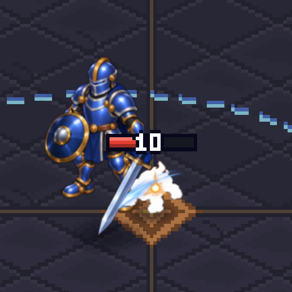
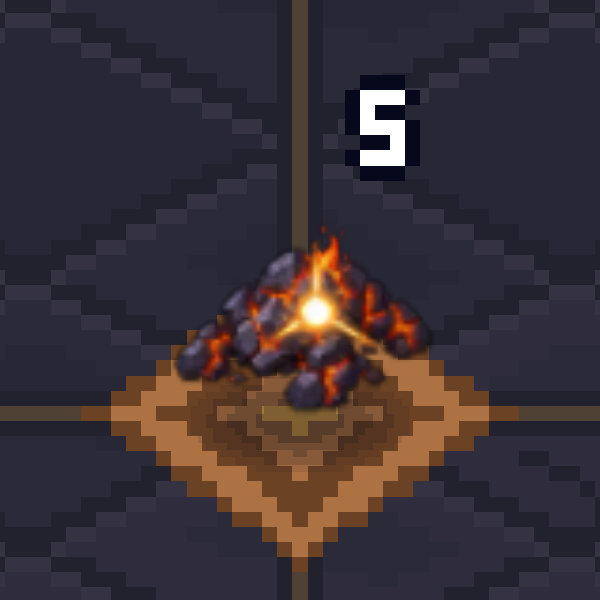
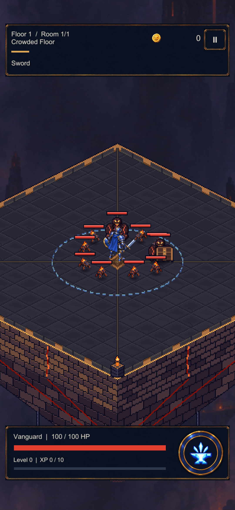
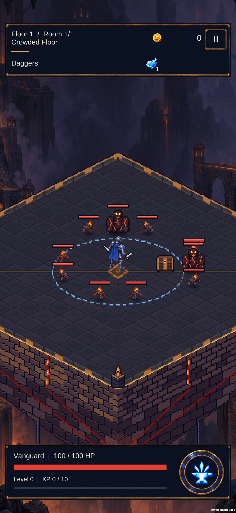
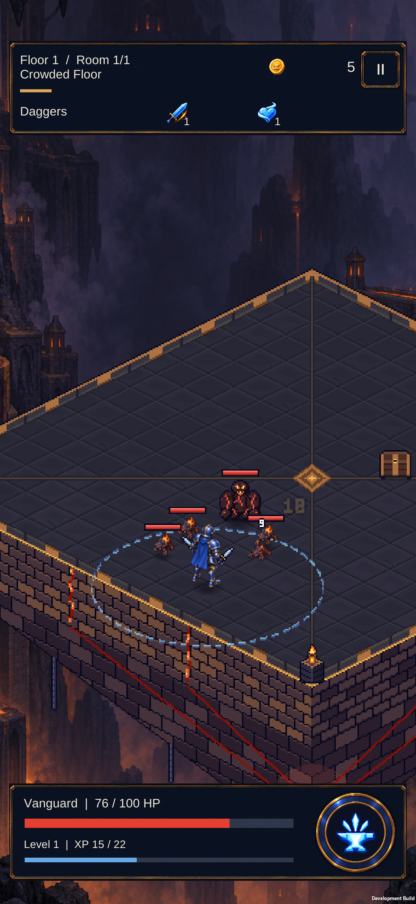

The sword arc follows its target. A hit compresses the Mite briefly; death leaves fading basalt and embers while combat continues immediately.


Eight Mites and two existing Grunts. The actual proof-floor pack walked into position; attacks were disabled for this readability capture. This is a Unity render, not a phone performance test.

Unchanged screenshots from the installed build: ten enemies entering, then pursuit after a southwest drag with Daggers. One proof victory completed; normal Ember Hall restored afterwards.


Prototype art, not final animation. Two walk contacts per facing; right-facing light is mirrored. Large enemies, chest, floor and some effects still use the earlier art. Hero foot planting and grip occlusion remain a separate pass.